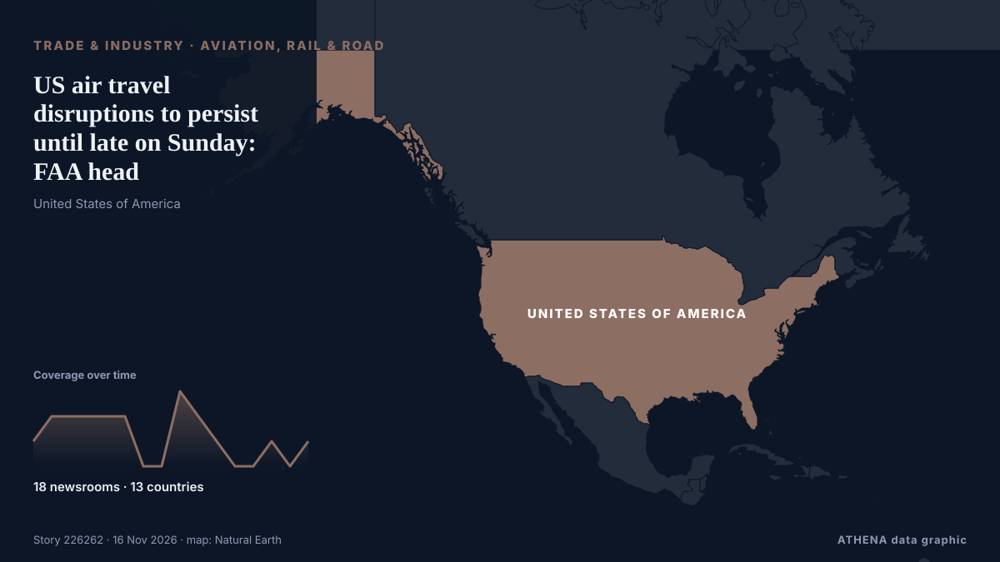

Commerce, industrie et infrastructures
SponsoriséPrésenté par  Cybernetics and Artificial Intelligence Lab Welcome to the Cybernetics and Artificial Intelligence Laboratory, established at the Department of Business Administration of the National and Kapodistrian University of Athens. The lab is headed by Professor Dimitrios Thomakos. The lab aims to do research that can be published in top venues. Our research uses tools and methods of Artificial Intelligence, and lies in the following areas: - Forecasting - Decision making - Cyber security - Finance We are always looking forward to collaborating with exceptional students!
Cybernetics and Artificial Intelligence Lab Welcome to the Cybernetics and Artificial Intelligence Laboratory, established at the Department of Business Administration of the National and Kapodistrian University of Athens. The lab is headed by Professor Dimitrios Thomakos. The lab aims to do research that can be published in top venues. Our research uses tools and methods of Artificial Intelligence, and lies in the following areas: - Forecasting - Decision making - Cyber security - Finance We are always looking forward to collaborating with exceptional students!
Les titres sont affichés en anglais, tels que publiés.

Aérien, rail et routeUS air travel disruptions to persist until late on Sunday: FAA head
The FAA issued a nationwide ground stop on Friday that halted nearly all departing flights. de SABC News
| 3 nov. | 91 |
|---|---|
| 4 nov. | 93 |
| 5 nov. | 105 |
| 6 nov. | 75 |
| 7 nov. | 44 |
| 8 nov. | 49 |
| 9 nov. | 117 |
| 10 nov. | 145 |
| 11 nov. | 109 |
| 12 nov. | 94 |
| 13 nov. | 85 |
| 14 nov. | 71 |
| 15 nov. | 47 |
| 16 nov. | 3 |
US air travel disruptions continue into third day
New York: US air travel disruptions continued for a third day with more than 5,200 flights already affected on Sunday, but Transportation Secretary Sean Duffy predicted a return to normalcy by Monday… de Deccan Herald
US blames system upgrade for longest nationwide FAA ground stop since 9/11
Sean Duffy, the country's transportation secretary, said his agency is 'going to hold people accountable'. de Al Jazeera English
3,000+ flights canceled after FAA's ground stop
U.S. air traffic is slowly returning to normal after a nationwide ground stop Friday halted flights and left thousands canceled and delayed. de The Hill
Tanker steering problem caused New Orleans ship collision
The asphalt tanker vessel that struck a docked cruise boat in the Mississippi River at New Orleans last week experienced a steering problem in which its rudder was stuck in one position, US… de RTÉ News
Trump breaks silence on nationwide ground stop, demands more money for FAA infrastructure from Congress
Duffy said officials were investigating whether contractor ‘incompetence’ or a faulty router was the cause of the meltdown. de The Independent
China, US discuss tariffs, farm trade ahead of Xi-Trump meeting
$60b package of reciprocal tariff cuts yet to be finalised amid Beijing's push to implement deal. de Express Tribune
Trump blames Biden for US flight disruptions
Trump, in first comments on air travel halt, blames Biden. de Gulf News
US flight suspension linked to copper wire upgrade, transport secretary says
US Transportation Secretary Sean Duffy says the disruption appears to have originated during maintenance work on ageing copper cables, with no indication of a foreign cyberattack, as thousands of… de ProtoThema English
US flight disruption: Flightradar24 compares skies before and after FAA nationwide ground stop
A nationwide ground stop imposed by the US Federal Aviation Administration (FAA) on Friday brought air traffic across the United States to a halt, disrupting thousands of flights and leaving hundreds… de Gulf News
2 violating oil tankers explode in south Hormuz Strait: IRGC
"One of the vessels is a supertanker; it is currently engulfed in flames following a powerful explosion," the Iranian Revolutionary Guard Corps (IRGC) Navy spokesperson said. de The Jerusalem Post
Airlines work to recover after thousands of flights cancelled in US
Officials said work to upgrade America’s air traffic control system led to intermittent communications and radar gaps. de The Irish News (Belfast)
Vietnam’s digital economy gains momentum with AI adoption
Driven by hard lessons from last year’s historic inundation, a central Vietnam locality not far from the famed Nha Trang beach has launched a digital map marking 90 critical locations to enable… de Tuoi Tre News
Trump official seeks $50 billion for air traffic control after outage
Transportation secretary Sean Duffy, White House ask for $30.1b to upgrade aging airports, air traffic control system. de Express Tribune
FAA chief says US air travel back to normal by Sunday
The Trump administration blamed Friday's ground stop – meaning no planes can take off – on a botched replacement of old copper wire communication lines. de Free Malaysia Today
US aviation shutdown blamed on L3 Harris installed router
WASHINGTON, Nov 14 - A massive, nearly five-hour shutdown of the US aviation system that has disrupted more than 20,000 flights since Friday may have been the fault of a single router installed by… de The Straits Times
Oil tanker on fire after hitting mine in Strait of Hormuz
Coalition says it destroyed two ballistic missile launchers The Coalition has released footage it says shows the targeting and destruction of two ballistic missile launch platforms. de Gulf News
2 oil supertankers catch fire after explosions in Strait of Hormuz: Iran
Why is Iran attacking tankers during peace talks? de Gulf News
Hormuz Shipping Traffic Remains 65% Below Pre-War Levels
Shipping traffic through the Strait of Hormuz remains 65 percent below pre-war levels, despite continued vessel movements. de Khaama Press
US flight chaos caused by repair of old copper wiring: Trump admin
Weary travellers endured more flight disruptions as service resumed at US airports after an hours-long total stoppage, with officials saying the situation should return to normal on Sunday. de Dawn
Canada’s Carney touts Philippine trade deal on Asia tour
Canadian Prime Minister Mark Carney announced a new trade agreement with the Philippines, aiming to lessen reliance on the United States amid trade tensions. de Arab News
Port of Gothenburg eyes large-scale biogas bunkering in 2027
Sweden’s Port of Gothenburg is gearing up to launch a new LBG liquefaction plant next year to enable large-scale liquefied biogas bunkering. de Offshore Energy
US flights resume after rare hours-long nationwide grounding but cancellations, delays persist
Weary travellers braced for more delays and cancellations on Saturday as flights resumed from US airports after being grounded for four hours due to a major outage on outdated communications systems. de Dawn
US Briefly Grounds All Departing Flights, 2nd Such Move Since 9/11
The nationwide ground stop was the first since January 2023, when a key FAA computer system malfunctioned, and the second since the aftermath of the September 11, 2001, attacks. de NDTV
Possible disruption expected for UK travellers after flights grounded across US
The US Federal Aviation Administration halted all flights across America for several hours on Friday. de Evening Standard (London)
US lifts ground stop, but passengers face second day of flight disruption
More than 1.5 million passengers face travel disruption as domestic and international airlines warn of knock-on delays. de Al Jazeera English
US to resume flights after air traffic network failure sparks chaos
US Transportation Secretary Sean Duffy said US airspace reopened at 8.15pm eastern time, but warned that flights would resume gradually and normal operations would take time to restore. de Free Malaysia Today
UN official urges Iran, US to let fertilizers through Hormuz Strait
A senior UN official has called on Iran and the US to allow fertilizer shipments through the Strait of Hormuz to alleviate poverty risks in vulnerable countries. de Arab News
Iraq turns to trucks to export oil in overland Syrian route revival
BASRA, Iraq: Outside a depot near Basra, hundreds of tanker trucks queue to load Iraqi crude oil bound for the Syrian port of Baniyas via an overland desert route which had been largely unused for… de Arab News
Expect more flight cancellations, says US transport chief
More than 20,000 flights were affected by Friday's nationwide stoppage, with over 3,800 cancellations and 2,100 delays reported on Saturday. de Free Malaysia Today
US airspace reopens after nationwide flight shutdown
The FAA lifted a nationwide ground stop on Friday after a communications failure at air traffic control centers caused chaos at US airports and triggered the longest shutdown since the September 11… de Cyprus Mail
US says airspace now 'opened up,' no cyberattack
Washington: The United States on Friday lifted an hours-long ground stop at the nation's airports, with top officials explaining that the disruption was due to old equipment and no... de Oman Observer
'I may lose my mind': Frustrated travelers stuck in US flight havoc
Confusion reigned at airports across the United States on Friday, as a rare grounding of all US flights stranded hundreds of thousands of frustrated travellers with no end to the delays in sight. de Dawn
DHS head Markwayne Mullin says there is not a threat to the U.S. amid FAA ground stop
Department of Homeland Security Secretary Markwayne Mullin spoke to at the White House on Friday afternoon after the FAA issues a total ground stop. de NPR
US ground stop caused by aging equipment, no evidence of cyberattack, Transportation Sec. says
"What we have is an incredibly old air traffic control system," Duffy said, explaining that outdated analog telecommunications equipment began producing inconsistent data. de The Jerusalem Post